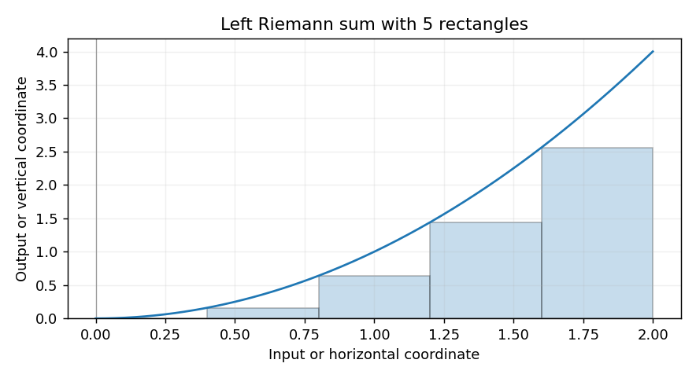
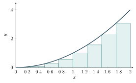
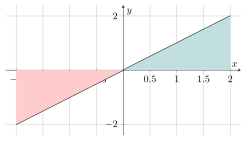
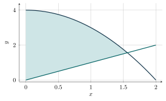
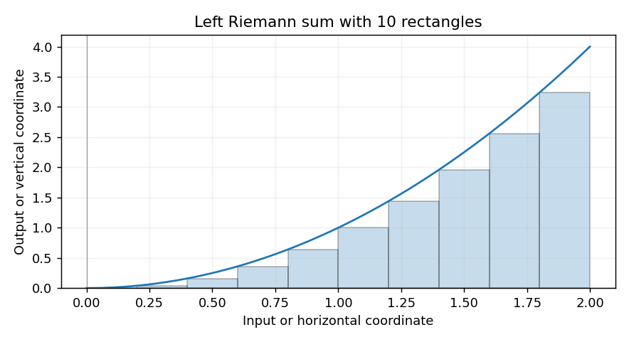

Integration
The central question. If a function describes a rate, how can we reconstruct the total change? If a curve bounds a region, how can we find its area without treating a curved boundary as straight? Both questions lead to a limit of sums, the definite integral. The surprising connection to antiderivatives is the Fundamental Theorem of Calculus.
Learning outcomes. By the end of this chapter, students should be able to construct and interpret left, right, midpoint, upper, and lower sums; express finite sums with sigma notation; define and evaluate definite integrals; distinguish signed area, geometric area, displacement, and distance; explain both parts of the Fundamental Theorem; evaluate indefinite integrals; use substitution with and without changed bounds; and calculate area between curves. Students will also use R and Python to investigate convergence and verify analytical results.
Prerequisites. Function notation, graphs, limits, continuity, derivatives, and basic antiderivatives (Chapters 1–4).
Visual concept investigation
From rectangular approximations to exact accumulation
Each rectangle contributes height times width. As the partition becomes finer, the sum may approach a definite limit, the integral. For increasing nonnegative functions, left sums underestimate and right sums overestimate area; for general functions neither conclusion is automatic. The integral measures signed accumulation, so regions below the axis contribute negatively.

Guided investigation. For \(f(x)=x^2\) on \([0,2]\), compare left sums with five and ten rectangles. Predict whether the error decreases, and distinguish the numerical pattern from a proof of convergence.
Interactive investigation: Riemann sums
Area and estimating with finite sums
Why approximation comes first
A rectangle has area equal to width times height. A curved region does not usually have a single height, but it can be approximated by many narrow rectangles. Let \(f\) be nonnegative on \([a,b]\). Divide the interval into \(n\) equal pieces of width \[\Delta x=\frac{b-a}{n},\qquad x_i=a+i\Delta x\quad (i=0,1,\ldots,n).\] Each rectangle has base \(\Delta x\) and height chosen from the function on its subinterval. The resulting area estimate is the sum of the rectangle areas.
Definition — Left, right, and midpoint sums. For a function \(f\) on \([a,b]\) and a uniform partition of width \(\Delta x\), define \[\begin{aligned} L_n&=\Delta x\sum_{i=0}^{n-1}f(x_i),\\ R_n&=\Delta x\sum_{i=1}^{n}f(x_i),\\ M_n&=\Delta x\sum_{i=1}^{n}f\left(\frac{x_{i-1}+x_i}{2}\right). \end{aligned}\] These quantities estimate signed accumulation; for \(f\ge0\) they estimate the area beneath the curve.

Example — A first comparison. Estimate the area beneath \(f(x)=x^2\) on \([0,2]\) with four rectangles using left and right endpoints.
Solution. Here \(\Delta x=1/2\). The left heights are \(0,1/4,1,9/4\) and the right heights are \(1/4,1,9/4,4\). Thus \[L_4=\tfrac12(0+\tfrac14+1+\tfrac94)=\tfrac74=1.75,\qquad R_4=\tfrac12(\tfrac14+1+\tfrac94+4)=\tfrac{15}{4}=3.75.\] The true integral will be \(8/3\approx2.667\). The left sum underestimates and the right sum overestimates because \(x^2\) is increasing on this interval.
Remark. An endpoint sum is not inherently an upper or lower sum. The direction depends on whether the function increases or decreases. Midpoint sums often improve accuracy but are not automatically exact.
Upper and lower sums
Definition — Upper and lower sums. For a partition \(P\) with subinterval widths \(\Delta x_i\), let \(m_i\) and \(M_i\) be the infimum and supremum of \(f\) on the \(i\)th subinterval. Then \[\underline S(f,P)=\sum_{i=1}^n m_i\Delta x_i,\qquad \overline S(f,P)=\sum_{i=1}^n M_i\Delta x_i.\] For a bounded function, every sample-point sum lies between the corresponding lower and upper sums.
If \(f\) is continuous, finer partitions allow these two estimates to approach the same value. The difference between them quantifies how much uncertainty remains from replacing the curve with rectangles.
Example — Error bracket for an increasing function. Let \(f(x)=1+x\) on \([0,3]\) with \(n\) equal subintervals.
Solution. The width is \(3/n\). As \(f\) increases, the left sum is a lower sum and the right sum is an upper sum. Their difference telescopes: \[R_n-L_n=\frac3n\bigl(f(3)-f(0)\bigr)=\frac9n.\] With \(n=90\), the true area is trapped in an interval of width \(0.1\). This gives an a priori error bracket without knowing the exact integral.
Accumulation from a rate
Suppose \(r(t)\) measures liters of water entering a tank per minute. On a short interval of duration \(\Delta t\), the added volume is approximately \(r(t_i^*)\Delta t\). Summing over the intervals estimates the total volume. The units confirm the reasoning: \[(\text{liters/minute})(\text{minutes})=\text{liters}.\] The same logic applies to electric energy from power, medication exposure from concentration, and displacement from velocity.
Example — Variable infusion rate. A device delivers fluid at \(r(t)=2+0.5t\) liters per hour during the first four hours. Approximate the total with four left rectangles and four right rectangles.
Solution. Since \(\Delta t=1\), the left estimate is \(r(0)+r(1)+r(2)+r(3)=2+2.5+3+3.5=11\) liters. The right estimate is \(r(1)+r(2)+r(3)+r(4)=2.5+3+3.5+4=13\) liters. The exact accumulation is \(12\) liters, as we will confirm with integration.
Displacement versus distance
A negative velocity contributes negative displacement but positive distance. If \(v(t)\) changes sign, the signed sum estimates the net change in position, whereas sums of \(|v(t)|\) estimate the total distance traveled. This distinction will remain essential throughout applied calculus.
Example — A direction change. Let \(v(t)=t-2\) meters per second for \(0\le t\le4\).
Solution. The velocity is negative until \(t=2\) and positive afterward. The net displacement is \(0\) meters because the two triangular signed areas cancel. The total distance is \(2+2=4\) meters. A zero displacement does not mean that the object remained stationary.
Sigma notation and limits of finite sums
A language for accumulation
The symbol \(\sum\) condenses repeated addition: \[\sum_{i=1}^n a_i=a_1+a_2+\cdots+a_n.\] For constants \(c\) and sequences \(a_i,b_i\), finite sums obey \[\sum_{i=1}^n(ca_i+b_i)=c\sum_{i=1}^n a_i+\sum_{i=1}^n b_i.\]
Theorem — Basic power sums. For positive integers \(n\), \[\sum_{i=1}^n i=\frac{n(n+1)}2,\qquad \sum_{i=1}^n i^2=\frac{n(n+1)(2n+1)}6,\qquad \sum_{i=1}^n i^3=\left(\frac{n(n+1)}2\right)^2.\]
Proof — Proof of the first formula. Pair the terms \(1+n\), \(2+(n-1)\), and so forth, or add the sum to its reverse. Then \(2\sum_{i=1}^n i=n(n+1)\). The remaining identities can be proved by induction.
Example — A limit of sums. Compute \(\lim_{n\to\infty}\sum_{i=1}^n\frac{3i^2}{n^3}\).
Solution. Using the square-sum formula, \[\sum_{i=1}^n\frac{3i^2}{n^3}=\frac{3}{n^3}\frac{n(n+1)(2n+1)}6=\frac{(n+1)(2n+1)}{2n^2}\longrightarrow1.\] This is also the right-endpoint Riemann sum for \(\int_0^1 3x^2\,dx\).
Example — Nonunit interval. Express the right sum for \(f(x)=2x+1\) on \([1,4]\) using \(n\) equal rectangles.
Solution. \(\Delta x=3/n\) and \(x_i=1+3i/n\), hence \[R_n=\frac3n\sum_{i=1}^n\left(3+\frac{6i}{n}\right)=9+\frac{18}{n^2}\frac{n(n+1)}2=18+\frac9n.\] The limiting accumulation is \(18\).
Remark. The limit concerns the entire sum, not an individual rectangle. Each rectangle becomes thin while the number of rectangles increases; the total can approach a nonzero finite quantity.
The definite integral
Definition and integrability
Definition — Definite integral. Let \(f\) be defined on \([a,b]\). For a partition \(a=x_0<x_1<\cdots<x_n=b\) and sample points \(x_i^*\in[x_{i-1},x_i]\), the Riemann sum is \(\sum_{i=1}^n f(x_i^*)\Delta x_i\). If these sums approach the same finite number \(I\) as the maximum subinterval width tends to zero, independently of the chosen partitions and sample points, then \(f\) is Riemann integrable and \[\boxed{\int_a^b f(x)\,dx=I.}\]
Theorem — Continuity implies integrability. Every continuous function on a closed bounded interval \([a,b]\) is Riemann integrable.
Remark. Some discontinuous functions are integrable as well. A bounded function with finitely many jump discontinuities is integrable. But a function that equals \(1\) at rational inputs and \(0\) at irrational inputs on \([0,1]\) is not Riemann integrable: every interval has both kinds of inputs, so its lower sums are \(0\) and upper sums are \(1\).
Signed area and orientation
If \(f\) is positive, its integral contributes positive area; if negative, it contributes negative signed area. The geometric area between a graph and the horizontal axis is \(\int_a^b|f(x)|\,dx\) when \(f\) is integrable.

Theorem — Linearity of the integral. If \(f\) and \(g\) are integrable and \(c\) is constant, then \[\int_a^b(f+g)\,dx=\int_a^b f\,dx+\int_a^b g\,dx,\qquad\int_a^b cf\,dx=c\int_a^b f\,dx.\]
Theorem — Additivity across intervals. If \(f\) is integrable on the relevant intervals, then for any \(a,b,c\), \[\int_a^b f(x)\,dx+\int_b^c f(x)\,dx=\int_a^c f(x)\,dx.\]
Theorem — Reversing bounds. For an integrable function, \[\int_b^a f(x)\,dx=-\int_a^b f(x)\,dx,\qquad \int_a^a f(x)\,dx=0.\]
Theorem — Comparison property. If \(f(x)\le g(x)\) on \([a,b]\), where \(a<b\), then \[\int_a^b f(x)\,dx\le\int_a^b g(x)\,dx.\]
Theorem — Integral bounds. If \(m\le f(x)\le M\) on \([a,b]\), then \[m(b-a)\le\int_a^b f(x)\,dx\le M(b-a).\]
Example — Use geometry before algebra. Evaluate \(\int_{-3}^3\sqrt{9-x^2}\,dx\).
Solution. The graph is the upper semicircle of radius \(3\). Its area is half the area of a circle: \(\frac12\pi(3)^2=\frac{9\pi}{2}\). No antiderivative is needed.
Example — Symmetry. Explain why \(\int_{-2}^2 x^5\,dx=0\) and find \(\int_{-2}^2 x^4\,dx\).
Solution. \(x^5\) is odd, so the signed contributions cancel. Since \(x^4\) is even, the second integral is twice \(\int_0^2 x^4\,dx=2(2^5/5)=64/5\).
Theorem — Even and odd integrands. For integrable \(f\) on \([-a,a]\), if \(f(-x)=f(x)\) then \(\int_{-a}^a f=2\int_0^a f\); if \(f(-x)=-f(x)\) then \(\int_{-a}^a f=0\).
Average value of a continuous function
Definition — Average value. For an integrable function \(f\) on \([a,b]\) with \(a<b\), its average value is \[f_{\mathrm{avg}}=\frac{1}{b-a}\int_a^b f(x)\,dx.\]
Example — Average concentration. Suppose \(C(t)=4+t\) mg/L over \(0\le t\le6\) hours. Find the average concentration.
Solution. The total concentration-time area is \(\int_0^6(4+t)\,dt=24+18=42\) mg\(\cdot\)h/L. Divide by six hours to obtain \(7\) mg/L. The integral and the average have different units.
The Fundamental Theorem of Calculus
Accumulation as a new function
For a continuous function \(f\), define an accumulation function \[A(x)=\int_a^x f(t)\,dt.\] The variable \(t\) is a dummy variable of integration; the upper limit \(x\) is the input to \(A\). An increase in \(x\) by a small amount \(h\) changes the accumulation by approximately \(f(x)h\). Therefore the derivative of the accumulated amount should equal the current rate.
Theorem — Fundamental Theorem of Calculus, Part I. If \(f\) is continuous on \([a,b]\) and \(A(x)=\int_a^x f(t)\,dt\), then \(A\) is differentiable on \((a,b)\) and \[\boxed{A'(x)=f(x).}\]
Proof. By additivity, \(A(x+h)-A(x)=\int_x^{x+h}f(t)\,dt\). Continuity ensures that the average value of \(f\) over the short interval approaches \(f(x)\) as \(h\to0\). Dividing by \(h\) gives \(A'(x)=f(x)\). The same argument works for positive and negative \(h\) sufficiently small.
Example — Derivative of an accumulation. Let \(G(x)=\int_1^{x^2}(1+t^4)\,dt\). Find \(G'(x)\).
Solution. The upper limit is \(u(x)=x^2\). Apply Part I and the chain rule: \[G'(x)=(1+(x^2)^4)(2x)=2x(1+x^8).\] Do not replace the integration variable \(t\) with \(x\) before applying the chain rule.
Theorem — Fundamental Theorem of Calculus, Part II. If \(f\) is continuous on \([a,b]\) and \(F\) is any antiderivative of \(f\), then \[\boxed{\int_a^b f(x)\,dx=F(b)-F(a).}\]
Proof. Part I shows that \(A(x)=\int_a^x f(t)\,dt\) is an antiderivative of \(f\). Since any two antiderivatives differ by a constant, \(A(x)=F(x)+C\). Evaluate at \(x=a\) to find \(C=-F(a)\); then \(A(b)=F(b)-F(a)\).
Example — Evaluate a definite integral. Compute \(\int_1^3(4x^3-2x)\,dx\).
Solution. An antiderivative is \(F(x)=x^4-x^2\). Hence \[\int_1^3(4x^3-2x)\,dx=(81-9)-(1-1)=72.\] Check the sign: the integrand is positive on \([1,3]\), so a positive result is plausible.
Example — Net change theorem. If a population changes at rate \(P'(t)=12e^{-0.2t}\) individuals per year, how much does the population increase in five years?
Solution. The net change is \(\int_0^5 12e^{-0.2t}\,dt=[-60e^{-0.2t}]_0^5=60(1-e^{-1})\approx37.93\) individuals. This is a change, not the final population: an initial population is needed to determine the final size.
The integral mean value theorem
Theorem — Mean value theorem for integrals. If \(f\) is continuous on \([a,b]\), then some \(c\in[a,b]\) satisfies \[\int_a^b f(x)\,dx=f(c)(b-a).\]
Proof. By the extreme value theorem, \(m\le f\le M\). The integral bounds imply \(m\le f_{\rm avg}\le M\). Continuity and the intermediate value theorem guarantee an input \(c\) with \(f(c)=f_{\rm avg}\).
Remark. This theorem does not say that \(c\) must be the midpoint. It says the continuous function attains its average height somewhere in the interval.
Indefinite integrals and the substitution method
Antiderivatives as families
Definition — Indefinite integral. If \(F'(x)=f(x)\) on an interval, then \[\int f(x)\,dx=F(x)+C,\] where \(C\) is an arbitrary constant. The indefinite integral is a family of functions, not a number.
Theorem — Basic antiderivative rules. For \(p\ne-1\), \[\int x^p\,dx=\frac{x^{p+1}}{p+1}+C,\quad \int e^x\,dx=e^x+C,\quad\int\cos x\,dx=\sin x+C,\quad\int\sin x\,dx=-\cos x+C.\] On intervals not crossing zero, \(\int\frac1x\,dx=\ln|x|+C\).
Example — Recognizing an inner derivative. Find \(\int 6x(3x^2+5)^4\,dx\).
Solution. Let \(u=3x^2+5\). Then \(du=6x\,dx\) and the integral becomes \(\int u^4\,du=u^5/5+C\). Substitute back: \[\frac{(3x^2+5)^5}{5}+C.\] Differentiating verifies the answer exactly.
Theorem — Substitution rule for indefinite integrals. If \(F'(u)=f(u)\) and \(u=g(x)\) is differentiable, then \[\int f(g(x))g'(x)\,dx=F(g(x))+C.\]
Proof. By the chain rule, \(\frac{d}{dx}F(g(x))=F'(g(x))g'(x)=f(g(x))g'(x)\).
Example — A logarithmic substitution. Evaluate \(\int \frac{2x}{x^2+4}\,dx\).
Solution. Set \(u=x^2+4\), so \(du=2x\,dx\). Then \(\int du/u=\ln|u|+C=\ln(x^2+4)+C\), because \(x^2+4>0\).
Example — A common trap. Why is \(\int e^{x^2}\,dx\) not equal to \(e^{x^2}+C\)?
Solution. Differentiating \(e^{x^2}\) gives \(2xe^{x^2}\), not \(e^{x^2}\). Substitution works immediately for \(\int 2xe^{x^2}\,dx\), but not for the displayed integral. Not every elementary-looking integrand has an elementary antiderivative.
Definite integrals and changed bounds
Theorem — Substitution rule for definite integrals. If \(g\) is continuously differentiable and \(f\) is continuous on the relevant range, then \[\int_a^b f(g(x))g'(x)\,dx=\int_{g(a)}^{g(b)} f(u)\,du.\]
Example — Change the limits. Evaluate \(\int_0^2 x\sqrt{x^2+1}\,dx\).
Solution. Set \(u=x^2+1\), so \(du=2x\,dx\). When \(x=0\), \(u=1\); when \(x=2\), \(u=5\). Thus \[\int_0^2 x\sqrt{x^2+1}\,dx=\frac12\int_1^5 u^{1/2}\,du=\frac13\bigl(5^{3/2}-1\bigr).\] The bounds have already changed, so do not substitute the original \(x\)-bounds into the \(u\)-antiderivative.
Remark. Two correct strategies: (i) change the bounds to \(u\)-values and finish in \(u\); or (ii) find the antiderivative in \(u\), return to \(x\), and use the original bounds. Mixing these strategies causes frequent errors.
Substitution and area between curves
From one curve to two
If \(f(x)\ge g(x)\) on \([a,b]\), the area of the region between the graphs is \[\boxed{A=\int_a^b\bigl(f(x)-g(x)\bigr)\,dx.}\] This formula comes from summing narrow vertical strips of height \(f(x)-g(x)\) and width \(\Delta x\). If the graphs cross, split the interval at each crossing or integrate \(|f-g|\).

Example — A bounded region. Find the area between \(y=4-x^2\) and \(y=x\) from \(x=0\) to their positive intersection.
Solution. Solve \(4-x^2=x\), giving \(x=\alpha=(-1+\sqrt{17})/2\). On \([0,\alpha]\) the parabola is above the line, so \[A=\int_0^\alpha(4-x^2-x)\,dx=\left[4x-\frac{x^3}{3}-\frac{x^2}{2}\right]_0^\alpha.\] The expression is exact; numerically \(\alpha\approx1.56155\) and \(A\approx3.7577\) square units.
Example — Two crossings require splitting. Find the area between \(y=x\) and \(y=x^3\) for \(-1\le x\le1\).
Solution. The curves meet at \(x=-1,0,1\). On \((-1,0)\), \(x^3>x\); on \((0,1)\), \(x>x^3\). Hence \[A=\int_{-1}^0(x^3-x)\,dx+\int_0^1(x-x^3)\,dx=\frac14+\frac14=\frac12.\] A single signed integral from \(-1\) to \(1\) would give zero, which is not the geometric area.
Example — A substituted area integral. The region between \(y=2x\sqrt{1+x^2}\) and the \(x\)-axis extends from \(x=0\) to \(x=1\). Find its area.
Solution. The function is nonnegative. With \(u=1+x^2\) and \(du=2x\,dx\), \[A=\int_0^1 2x\sqrt{1+x^2}\,dx=\int_1^2 u^{1/2}\,du=\frac23(2^{3/2}-1).\]
A complete modeling workflow
For any applied integral: (1) identify the accumulating quantity and its units; (2) define the independent variable and interval; (3) check the sign of the integrand; (4) draw or reason about the graph; (5) select a mathematical or numerical method; (6) check magnitude and units; (7) state the result in context. Software helps with steps (4) and (5), but does not replace the others.
R computational laboratories
Before running the code: predict the result using the mathematics above. Afterward, explain whether the numerical result is plausible and what the units mean. All R laboratories appear before the Python laboratories. Base R is sufficient; no additional packages are required.
R Laboratory 1: Left, right, and midpoint sums
f <- function(x) x^2
riemann <- function(f, a, b, n, method = "left") {
h <- (b - a)/n
i <- 0:(n - 1)
x <- if (method == "left") a + i*h else
if (method == "right") a + (i + 1)*h else
a + (i + 0.5)*h
h * sum(f(x))
}
for (n in c(4, 8, 16, 64)) {
cat(n, riemann(f, 0, 2, n, "left"),
riemann(f, 0, 2, n, "right"),
riemann(f, 0, 2, n, "midpoint"), "\n")
}
cat("Exact:", 8/3, "\n")Interpretation task. Compare the computed output with a mathematical prediction. Explain the effect of approximation, sign, and units where relevant.
R Laboratory 2: Signed area and distance
v <- function(t) t - 2
net <- integrate(v, 0, 4)$value
distance <- integrate(function(t) abs(v(t)), 0, 4)$value
cat("Displacement:", net, "m\n")
cat("Distance:", distance, "m\n")
curve(v(x), from=0, to=4, xlab="Time (s)", ylab="Velocity (m/s)")
abline(h=0, lty=2)Interpretation task. Compare the computed output with a mathematical prediction. Explain the effect of approximation, sign, and units where relevant.
R Laboratory 3: Accumulation and the Fundamental Theorem
rate <- function(t) 2 + 0.5*t
A <- function(x) integrate(rate, 0, x)$value
x <- seq(0, 4, length.out=101)
plot(x, vapply(x, A, numeric(1)), type="l", lwd=2,
xlab="Time (hours)", ylab="Accumulated volume (L)")
cat("Volume after 4 hours:", A(4), "L\n")
h <- 1e-4
cat("Approx derivative at t=2:", (A(2+h)-A(2-h))/(2*h), "\n")
cat("Rate at t=2:", rate(2), "L/hour\n")Interpretation task. Compare the computed output with a mathematical prediction. Explain the effect of approximation, sign, and units where relevant.
R Laboratory 4: Numerical integration accuracy
f <- function(x) exp(-x^2)
for (n in c(10, 20, 40, 80)) {
h <- 2/n
mid <- (0:(n-1)+0.5)*h
midpoint <- h*sum(f(mid))
cat("n =", n, " midpoint =", midpoint, "\n")
}
cat("Adaptive quadrature:", integrate(f, 0, 2)$value, "\n")Interpretation task. Compare the computed output with a mathematical prediction. Explain the effect of approximation, sign, and units where relevant.
R Laboratory 5: Area between two curves
top <- function(x) 4-x^2
bottom <- function(x) x
alpha <- (-1+sqrt(17))/2
area <- integrate(function(x) top(x)-bottom(x), 0, alpha)$value
cat("Intersection:", alpha, "Area:", area, "\n")
x <- seq(0, alpha, length.out=200)
plot(x, top(x), type="l", lwd=2, ylim=c(0,4),
xlab="x", ylab="y")
lines(x, bottom(x), lwd=2, lty=2)Interpretation task. Compare the computed output with a mathematical prediction. Explain the effect of approximation, sign, and units where relevant.
R Laboratory 6: A concentration-time model
C <- function(t) 3 + 12*exp(-0.4*t)
auc <- integrate(C, 0, 8)$value
average <- auc/8
cat("AUC:", auc, "mg*h/L\n")
cat("Mean concentration:", average, "mg/L\n")
curve(C(x), from=0, to=8, lwd=2,
xlab="Time (h)", ylab="Concentration (mg/L)")Interpretation task. Compare the computed output with a mathematical prediction. Explain the effect of approximation, sign, and units where relevant.
Python computational laboratories
Setup. Use Python 3 with NumPy, Matplotlib, and SciPy installed. The Python experiments revisit the same mathematical questions as the R experiments. Run them independently, then compare results to at least six significant digits where appropriate.
Python Laboratory 1: Left, right, and midpoint sums
def riemann(f, a, b, n, method="left"):
h = (b-a)/n
offsets = {"left": 0, "right": 1, "midpoint": 0.5}
shift = offsets[method]
return h * sum(f(a+(i+shift)*h) for i in range(n))
f = lambda x: x*x
for n in (4, 8, 16, 64):
print(n, *(round(riemann(f, 0, 2, n, method), 8)
for method in ("left", "right", "midpoint")))
print("Exact:", 8/3)Reflection. Identify which part of the result follows from a theorem and which part depends on a numerical algorithm or plot.
Python Laboratory 2: Signed area and distance
from scipy.integrate import quad
import numpy as np
import matplotlib.pyplot as plt
v = lambda t: t - 2
print("Displacement:", quad(v, 0, 4)[0], "m")
print("Distance:", quad(lambda t: abs(v(t)), 0, 4)[0], "m")
t = np.linspace(0, 4, 301)
plt.plot(t, v(t)); plt.axhline(0, linestyle="--")
plt.xlabel("Time (s)"); plt.ylabel("Velocity (m/s)")
plt.show()Reflection. Identify which part of the result follows from a theorem and which part depends on a numerical algorithm or plot.
Python Laboratory 3: Accumulation and the Fundamental Theorem
from scipy.integrate import quad
import numpy as np
import matplotlib.pyplot as plt
rate = lambda t: 2 + 0.5*t
A = lambda x: quad(rate, 0, x)[0]
x = np.linspace(0, 4, 101)
plt.plot(x, [A(z) for z in x])
plt.xlabel("Time (hours)"); plt.ylabel("Volume (L)")
plt.show()
h = 1e-4
print("Volume:", A(4), "L")
print("Derivative estimate:", (A(2+h)-A(2-h))/(2*h))
print("Rate:", rate(2), "L/hour")Reflection. Identify which part of the result follows from a theorem and which part depends on a numerical algorithm or plot.
Python Laboratory 4: Numerical integration accuracy
import math
from scipy.integrate import quad
f = lambda x: math.exp(-x*x)
for n in (10, 20, 40, 80):
h = 2/n
midpoint = h*sum(f((i+0.5)*h) for i in range(n))
print("n =", n, "midpoint =", midpoint)
print("Adaptive quadrature:", quad(f, 0, 2)[0])Reflection. Identify which part of the result follows from a theorem and which part depends on a numerical algorithm or plot.
Python Laboratory 5: Area between two curves
import math
import numpy as np
from scipy.integrate import quad
import matplotlib.pyplot as plt
alpha = (-1+math.sqrt(17))/2
top = lambda x: 4-x*x
bottom = lambda x: x
area = quad(lambda x: top(x)-bottom(x), 0, alpha)[0]
print("Intersection:", alpha, "Area:", area)
x = np.linspace(0, alpha, 200)
plt.plot(x, top(x)); plt.plot(x, bottom(x), linestyle="--")
plt.fill_between(x, bottom(x), top(x), alpha=0.2)
plt.xlabel("x"); plt.ylabel("y"); plt.show()Reflection. Identify which part of the result follows from a theorem and which part depends on a numerical algorithm or plot.
Python Laboratory 6: A concentration-time model
import math
import numpy as np
from scipy.integrate import quad
import matplotlib.pyplot as plt
C = lambda t: 3 + 12*math.exp(-0.4*t)
auc = quad(C, 0, 8)[0]
print("AUC:", auc, "mg*h/L")
print("Mean concentration:", auc/8, "mg/L")
t = np.linspace(0, 8, 200)
plt.plot(t, [C(z) for z in t])
plt.xlabel("Time (h)"); plt.ylabel("Concentration (mg/L)")
plt.show()Reflection. Identify which part of the result follows from a theorem and which part depends on a numerical algorithm or plot.
Concept checks and common misconceptions
Does \(\int_0^4 v(t)\,dt=0\) imply the object did not move? Explain using a sketch.
Why is \(\int_0^2 f(x)\,dx\) a number while \(\int f(x)\,dx\) is a family of functions?
A student claims the left sum always underestimates. Give a counterexample.
Why does \(\int_0^1 x^{-1}\,dx\) require care even though \(\ln|x|\) is an antiderivative on \((0,1]\)?
A student writes \(\int_0^2 2x\cos(x^2)\,dx=\int_0^2\cos u\,du\). Identify and correct the error.
If two functions cross, why can integrating \(f-g\) over the entire interval fail to give the area between them?
If the measured rate is in milligrams per hour, what are the units of its integral over time?
What is the conceptual difference between computing a Riemann sum and evaluating an antiderivative?
Exercises
Instructions. Show mathematical reasoning before using software. Use exact answers when possible. For numerical problems, report units and explain the method used. Problems are grouped to build from definitions to modeling.
A. Finite sums and notation
Write \(3+6+9+\cdots+3n\) in sigma notation and simplify.
Compute \(\sum_{i=1}^{12}(2i-1)\) without adding each term separately.
Express the left, right, and midpoint sums for \(f(x)=x^2+1\) on \([0,3]\) using \(n\) rectangles.
Find \(L_6\) and \(R_6\) for \(f(x)=2x+3\) on \([1,4]\). Which is larger? Why?
For \(f(x)=e^{-x}\) on \([0,2]\), predict which endpoint sum is larger and justify using monotonicity.
Evaluate \(\lim_{n\to\infty}\frac1{n^2}\sum_{i=1}^n i\).
Evaluate \(\lim_{n\to\infty}\frac1{n^3}\sum_{i=1}^n i^2\).
Express \(\int_2^5(x^2-1)\,dx\) as a limit of right-endpoint sums without evaluating it.
Explain why the widths \(\Delta x_i\) need not be equal in the general Riemann integral definition.
Show that \(R_n-L_n=(b-a)[f(b)-f(a)]/n\) for a monotone function with uniform partitions, and state the relevant sign.
B. Definite integrals and geometry
Evaluate \(\int_{-4}^4\sqrt{16-x^2}\,dx\) geometrically.
Compute \(\int_{-3}^3(x^3+2x^2)\,dx\) using symmetry.
If \(\int_0^2 f=5\) and \(\int_2^7 f=-3\), find \(\int_0^7 f\) and \(\int_7^0 f\).
If \(1\le f(x)\le4\) on \([2,5]\), give lower and upper bounds for \(\int_2^5 f\).
Find the average value of \(f(x)=x^2\) on \([0,3]\).
A velocity is \(v(t)=3-t\) for \(0\le t\le5\). Find displacement and total distance traveled.
Sketch a function whose definite integral is negative but whose geometric area above/below the axis is positive.
Determine whether the function \(f(x)=0\) for \(x<1\) and \(f(x)=2\) for \(x\ge1\) is integrable on \([0,2]\), and compute its integral.
State and explain the geometric meaning of \(\int_1^4 5\,dx\).
Give an example of a bounded function on \([0,1]\) that is not Riemann integrable and explain why.
C. Fundamental Theorem and antiderivatives
Differentiate \(F(x)=\int_0^x\sqrt{1+t^4}\,dt\).
Differentiate \(G(x)=\int_2^{3x}\cos(t^2)\,dt\).
Differentiate \(H(x)=\int_x^5 e^{-t^2}\,dt\).
Evaluate \(\int_0^2(3x^2+4x)\,dx\).
Evaluate \(\int_1^e\frac1x\,dx\).
Evaluate \(\int_0^{\pi/2}\cos x\,dx\).
Find all antiderivatives of \(f(x)=4x^3-6x+2\).
Find \(F\) if \(F'(x)=2x+e^x\) and \(F(0)=7\).
A flow rate is \(r(t)=5+2t\) L/min. Find the volume added from \(t=0\) to \(t=3\) minutes.
Explain why \(\int_0^1\frac1x\,dx\) is not a proper Riemann integral.
D. Substitution and areas between curves
Evaluate \(\int 4x(x^2+3)^5\,dx\).
Evaluate \(\int\frac{3x^2}{x^3+7}\,dx\).
Evaluate \(\int e^{2x+1}\,dx\).
Evaluate \(\int_0^1 2xe^{x^2}\,dx\) using changed bounds.
Evaluate \(\int_0^1\frac{x}{1+x^2}\,dx\).
Evaluate \(\int_0^{\pi/4}\sin(2x)\,dx\).
Find the area between \(y=x\) and \(y=x^2\) on \([0,1]\).
Find the area between \(y=4\) and \(y=x^2\) on \([-2,2]\).
Find the area between \(y=x^3\) and \(y=x\) on \([-1,1]\).
Find the area between \(y=2x\) and \(y=x^2\) in the first quadrant.
E. Computation, interpretation, and modeling
Use R to compute \(L_n,R_n,M_n\) for \(f(x)=\sin x\) on \([0,\pi]\) with \(n=10,20,40,80\). Compare with the exact integral.
Repeat Exercise 41 in Python. Explain the observed convergence.
A power demand curve is \(P(t)=100+20\sin(\pi t/12)\) kilowatts for \(0\le t\le12\) hours. Find the total energy in kWh.
A sensor reports \(C(t)=5+8e^{-0.5t}\) mg/L. Compute its eight-hour average concentration and interpret it.
Use midpoint sums to estimate \(\int_0^2 e^{-x^2}\,dx\) for \(n=10,20,40,80\) and compare with numerical quadrature.
Construct a function with positive net accumulation but at least one negative-rate interval; explain its graph.
A particle has \(v(t)=t^2-4t+3\) m/s on \([0,4]\). Find the exact displacement and total distance, accounting for direction changes.
Find a value \(c\) satisfying the integral mean value theorem for \(f(x)=2x+1\) on \([1,5]\).
Explain why an integral of concentration with respect to time is an exposure measure rather than a total mass of a substance.
Write a short paragraph explaining when numerical integration is preferable to symbolic integration.
Capstone project: Exposure, accumulation, and numerical evidence
Scenario. A simplified environmental monitoring station records an estimated pollutant concentration over an eight-hour period. The concentration model is \[C(t)=3+12e^{-0.4t}\quad\text{mg/L},\qquad 0\le t\le8\ \text{hours}.\] The quantity \(\int_0^8 C(t)\,dt\) is the area under the concentration–time curve (AUC), measured in mg\(\cdot\)h/L. It is an exposure summary, not a pollutant mass and not by itself a clinical risk estimate.
Part I: Mathematical modeling (25 points)
Sketch \(C(t)\), label its initial value and limiting concentration, and explain the model’s qualitative behavior.
Derive an exact expression for \(A(T)=\int_0^T C(t)\,dt\) for \(0\le T\le8\).
Differentiate \(A(T)\) and interpret \(A'(T)\) using the Fundamental Theorem of Calculus.
Compute the exact eight-hour AUC and average concentration, with units.
Part II: Numerical approximation (25 points)
Implement left, right, and midpoint sums for \(n=8,16,32,64\) in R.
Report absolute errors against the analytical AUC and explain which sums bound the result.
Create a convergence graph with \(n\) on the horizontal axis and the estimates on the vertical axis.
Part III: Independent Python replication (20 points)
Independently implement the three sums in Python.
Compare R and Python results to at least six significant digits.
Use SciPy quadrature to estimate the AUC and explain how numerical quadrature differs from the antiderivative method.
Part IV: Sensitivity and communication (30 points)
Replace the decay constant \(0.4\) with \(0.25\) and \(0.6\). Recompute the AUC and explain the direction of change.
Identify two assumptions or limitations of the model and describe what data would be needed to validate it.
Submit a 2–3 page report with equations, two figures, a comparison table, code appendices, and a short interpretation for a nontechnical reader.
Rubric: mathematical derivation and units (25); numerical approximations and errors (25); independent Python replication (20); sensitivity analysis and communication (30). Clear explanations and reproducible code are required.
Chapter synthesis
Finite sums approximate accumulation by adding rate \(\times\) interval width.
Definite integrals are limits of Riemann sums and represent signed accumulation.
The Fundamental Theorem connects rates, accumulation functions, and antiderivatives.
Substitution reverses the chain rule; definite-integral bounds must change consistently.
Geometric area between curves uses upper minus lower, with splitting at crossings.
R and Python support visualization and numerical verification, not a substitute for mathematical reasoning.
Graphical synthesis and reflective practice

Reflection. State what the graph demonstrates, what it does not establish, and how you would verify the corresponding claim analytically. Identify the relevant units or mathematical assumptions before using a computer-generated result.